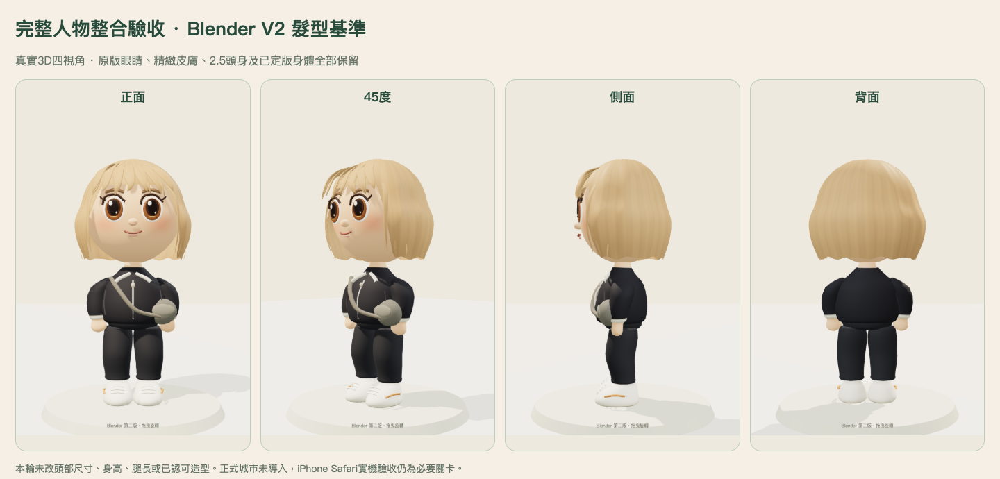
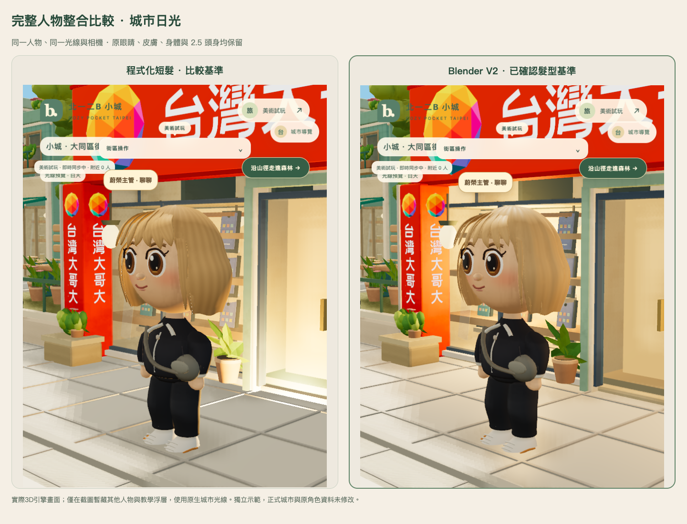
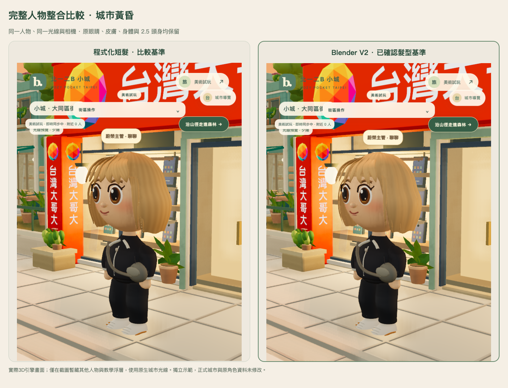
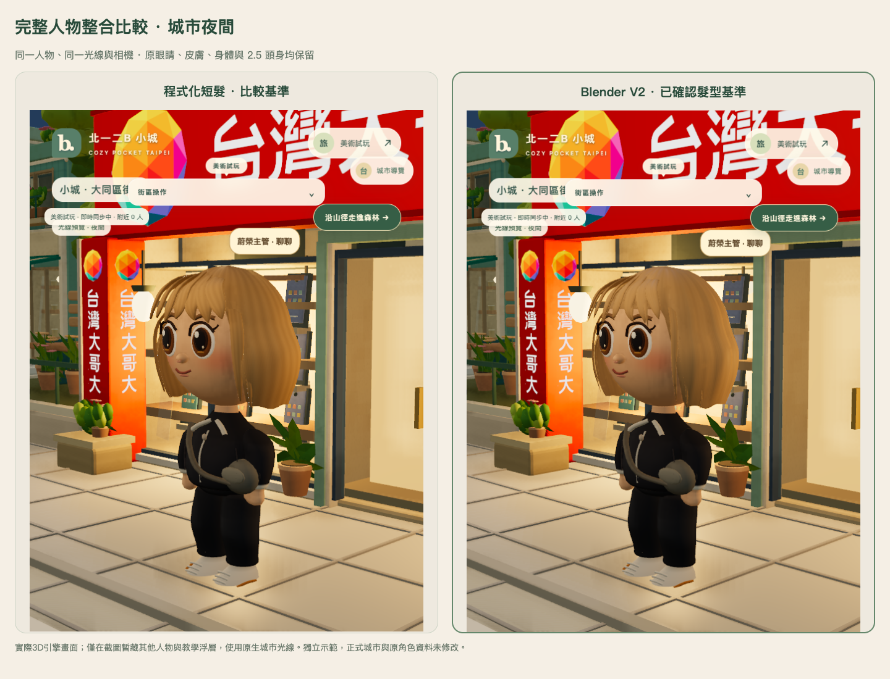

Blender V2 已確認基準 · 獨立整合候選從頭到腳，看完整人物
保留第二版短髮、原版眼睛、精緻皮膚與 2.5 頭身。這次補上完整取景、城市光線比較，以及功能與回復驗證；沒有改動正式城市或原角色資料。
旋轉真實 3D 人物／城市試玩 ↗
正式導入前仍須通過實體 iPhone Safari 驗收。
桌面 Chromium／WebKit 與隔離世界測試不代替真機。完整人物美術也留待你看過本次比較後確認。

同一角色、同一工作室燈光。頭頂到鞋底均完整呈現；可點圖放大。
本輪美術檢查
| 部位 | 觀察與處理 |
|---|
| 瀏海、側髮、後腦與髮尾 | 沿用已認可的 V2 資產，沒有為了整合再重做髮型。檢查四視角、接縫、頭部轉動及城市日夜；保留自然分束、後腦髮流與內彎髮尾。 |
| 臉、皮膚與比例 | 原版眼睛、五官位置、精緻皮膚、頭部尺寸、身高、腿長及 2.5 頭身保持原檔。 |
| 身體與衣服 | 圓潤肩袖、曲面軀幹、寬鬆褲管與圓鞋已符合目前定版方向。衣料褶皺、縫線與材質細節仍比最初示意圖簡化，本輪不擴改已確認身體。 |
髮絲的非對稱細節與方向性反光也仍有提升空間，不能把功能通過等同於已達到參考圖的全部美術品質。
同條件四視角比較
左：程式化短髮比較基準。右：Blender V2 完整人物。兩邊臉部、身體與服裝相同，使用相同光線與相機。
城市日光、黃昏、夜間
使用原生城市的光源與材質。光線預覽只影響此頁呈現，不修改遊戲時間、存檔或伺服器；截圖暫藏其他人物及教學浮層，避免擋住角色。

城市日光
城市黃昏
城市夜間
功能與導入關卡
桌面 Chromium／WebKit 已驗證行走與權威位置保存、換裝與重新載入、真實頭部樞紐旋轉、沙發互動及多人同步。另一個瀏覽器實際看見指定示範角色的 V2 GLB，髮型與服裝更新也會同步；關閉／重啟模型開關保持同一份角色資料。兩引擎各 40 輪切換後資源數維持平台，沒有 context loss。這些是隔離桌面證據，實體 iPhone 與正式城市導入仍未執行。
目前比較頁會保留三版快取，不能把快取穩定解讀為沒有記憶體成本。正式套件只保留 V2 與必要的舊版回復路徑，不打包比較頁或 V1。
正式城市導入準備
- 先過驗收：完整人物美術確認、實體 iPhone 長走／貼牆／換裝、雙裝置同步、背景返回都必須完成。
- 限一名指定角色：以版本化 GLB 和材質替換該角色短髮；照片專屬外觀、其他髮型與 NPC 不直接全面替換。
- 存檔不改格式：保留髮型服裝 ID、背包、金幣、家具、寵物與位置；不新增 renderer 欄位到角色或同步封包。
- 功能開關預設關閉：正式城市要另做小範圍 patch，先讓指定角色啟用；本候選的指定同伴與舊模型回復接口只用於隔離演練。
- 可立即回到舊外觀：關開關、重新載入舊資產清單並釋放新材質／快取。美術回復不還原資料庫，不覆蓋期間的新購物與進度。
本輪沒有修改正式城市，也沒有啟用正式導入開關。